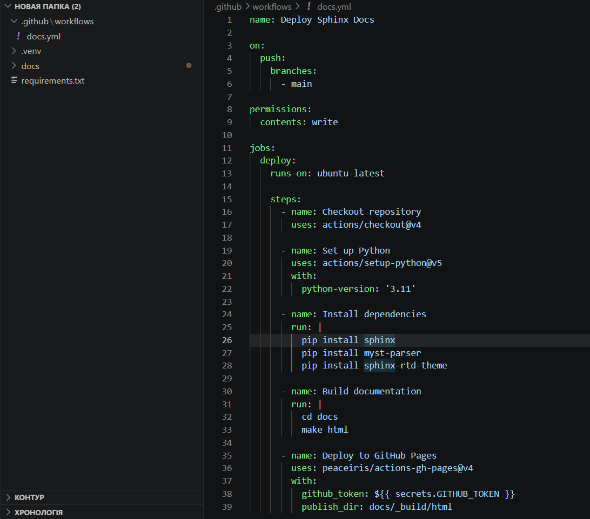

Розділ 3
ПРАКТИЧНА РЕАЛІЗАЦІЯ ТА НАЛАШТУВАННЯ АВТОМАТИЗАЦІЇ
3.1. Структурування навчальної документації та налаштування conf.py
Практичний етап реалізації системи починається з формування логічної структури каталогів, яка повинна забезпечувати зручний доступ до вихідних текстів та автоматично генерованих розділів. У межах академічного проекту рекомендується відокремлювати папку з документацією від основного коду програми, створюючи для цього директорію docs у корені репозиторію. Така організація дозволяє уникнути захаращення робочого простору та спрощує налаштування шляхів пошуку для генератора Sphinx. Головним елементом структури є файл index.rst, який виконує роль вхідної точки та містить директиву toctree для керування ієрархією сторінок. Згідно з методичними рекомендаціями щодо оформлення технічних звітів під авторством Олега Павленка 41, чітка структура папок є першим кроком до створення масштабованої бази знань.
Центральним вузлом управління всіма процесами генерації є файл конфігурації conf.py, у якому визначаються параметри проекту, підключені розширення та налаштування візуальної теми. Першочерговим завданням при роботі з цим файлом є імпорт системних модулів та додавання шляху до вихідного коду проекту в змінну sys.path. Це необхідно для того, щоб розширення autodoc могло коректно знайти та проаналізувати Python-модулі, що знаходяться на рівень вище в ієрархії папок. Налаштування метаданих, таких як назва проекту, ім’я автора та версія, забезпечує автоматичне заповнення відповідних полів у колонтитулах та на головній сторінці сайту. У посібнику з адміністрування систем документації від Ігоря Сисоєва 42 наголошується, що правильна ініціалізація шляхів у конфігурації запобігає більшості помилок під час збирання.
Наступним кроком є визначення списку розширень у масиві extensions, де обов’язково мають бути вказані sphinx.ext.autodoc, sphinx.ext.napoleon та sphinx.ext.viewcode. Це надзвичайно корисно для навчальних цілей, оскільки викладач може легко перевірити логіку програми без необхідності вручну шукати потрібний файл у репозиторії. Налаштування параметрів autodoc_member_order дозволяє керувати порядком відображення методів у класах, наприклад за алфавітом або за порядком їх появи в коді. Як зазначає розробник інструментів аналізу коду Сергій Бережний у своїх статтях про якість документації 43, використання вбудованих переглядів коду підвищує довіру до технічного опису.

Рис.3.1-Структурування навчальної документації та налаштування conf.py
Важливим аспектом конфігурації є вибір та налаштування теми оформлення через змінну html_theme, де для даного проекту було обрано sphinx_rtd_theme. Ця тема вимагає додаткового встановлення як окремого пакету Python, що повинно бути враховано у файлі залежностей проекту. Налаштування параметрів html_theme_options дозволяє кастомізувати поведінку навігаційного меню, додавати логотип навчального закладу та змінювати колірну схему. Адаптивність обраної теми гарантує, що документація буде однаково зручною для читання як на великих моніторах, так і на екранах мобільних пристроїв. У дослідженні Ернеста Рутерфорда щодо візуальної ергономіки цифрових документів 44 підкреслюється, що зручність навігації безпосередньо впливає на швидкість засвоєння технічної інформації.
Для підтримки математичних описів у файлі conf.py активується розширення sphinx.ext.mathjax, яке забезпечує рендеринг формул за допомогою JavaScript бібліотеки. Це не потребує встановлення важких пакетів LaTeX на сервері збирання, що робить процес автоматизації в GitHub Actions швидшим та надійнішим. Студент може використовувати стандартні блоки математичної розмітки безпосередньо в текстах reStructuredText, отримуючи професійний вигляд рівнянь у браузері. Такий підхід забезпечує ідеальну якість друку при конвертації сторінок у формат PDF або при їх завантаженні для офлайн перегляду. Гнучкість налаштування MathJax дозволяє адаптувати відображення символів під специфічні потреби академічних дисциплін, що вимагають складної нотації.
Механізм intersphinx налаштовується через словник intersphinx_mapping, де вказуються URL-адреси офіційних документацій бібліотек, що використовуються в проекті. Це дозволяє системі автоматично створювати посилання на стандартні класи Python або функції сторонніх фреймворків, усуваючи необхідність дублювання загальновідомої інформації. При натисканні на тип даних у описі методу користувач перенаправляється на відповідну сторінку офіційного посібника, що створює ефект цілісного середовища знань. Така інтеграція є ознакою високої технічної культури та значно полегшує роботу з кодом для нових учасників проекту. У праці Віктора Глушкова про кібернетичні методи управління інформацією 45 наголошується на важливості семантичних зв’язків між розподіленими базами знань.
Структурування змісту в index.rst передбачає поділ документації на логічні блоки, такі як вступ, опис архітектури, довідник API та інструкції для користувача. Директива toctree з параметром caption дозволяє створювати іменовані розділи в боковій панелі навігації, що покращує орієнтацію в об’ємних роботах. Кожен файл у структурі проекту повинен мати чіткий заголовок, який автоматично стає назвою посилання в загальному змісті. Використання окремих файлів для кожного великого розділу полегшує спільну роботу через Git, оскільки зменшує ймовірність конфліктів при одночасному редагуванні. Чітка ієрархія документів є фундаментом для автоматичної генерації змістів, покажчиків та списків термінів, що виконується Sphinx без втручання автора.
Налаштування файлів статичних ресурсів через параметр html_static_path дозволяє додавати власні CSS стилі та зображення, які не є частиною основних текстів розмітки. Це корисно для впровадження специфічного брендування або виправлення дрібних недоліків стандартних тем оформлення під конкретні вимоги. Студенти можуть створювати власні стилі для підсвічування коду або оформлення таблиць, що додає індивідуальності їхнім роботам. Усі файли з цієї папки копіюються в фінальну збірку без змін, зберігаючи свою структуру та доступність через відносні посилання. Такий рівень контролю над візуальним представленням робить Sphinx потужним інструментом для створення не просто документації, а повноцінного статичного сайту.
Для автоматичного вилучення документації з коду у файлах розмітки використовуються директиви automodule або autoclass, які вказують Sphinx, які саме частини програми потрібно проаналізувати. Ці директиви підтримують параметри для включення або виключення окремих членів класів, а також для відображення успадкованих методів. Використання прапорця members забезпечує повне покриття документацією всіх публічних елементів інтерфейсу програми. Це дозволяє підтримувати опис API у актуальному стані без необхідності вручну переписувати сигнатури функцій при кожній зміні коду. Процес стає повністю автоматизованим: зміна в коді призводить до зміни в документації під час наступного циклу збирання в хмарі.
Додатково у conf.py можна налаштувати мову документації за допомогою параметра language, що впливає на локалізацію стандартних елементів інтерфейсу, таких як пошук або кнопки навігації. Встановлення української мови забезпечує коректне відображення автоматичних заголовків та системних повідомлень, що важливо для україномовних навчальних проектів. Sphinx підтримує багатомовність через механізми gettext, що дозволяє створювати паралельні версії документів для міжнародного використання. Робота з локалізацією привчає студентів думати про глобальну доступність своїх продуктів та розуміти принципи міжнародної технічної комунікації. Це розширює кругозір майбутніх фахівців та готує їх до роботи в мультикультурних командах.
Конфігураційний файл також дозволяє налаштовувати виключення для пошукових роботів та керувати створенням індексів для великих проектів. Параметр exclude_patterns використовується для того, щоб генератор ігнорував тимчасові файли або каталоги з віртуальним середовищем Python. Це критично важливо для швидкості збирання, оскільки Sphinx не витрачатиме час на сканування тисяч файлів сторонніх бібліотек. Правильне налаштування ігнорування файлів є частиною загальної стратегії оптимізації продуктивності системи автоматизації. Якісна конфігурація забезпечує стабільну роботу конвеєра та мінімізує кількість хибних попереджень під час процесу генерації артефактів.
На завершення налаштування conf.py варто перевірити коректність роботи всіх посилань та розширень за допомогою локального збирання командою make html. Це дозволяє переконатися, що всі шляхи вказані вірно і система здатна імпортувати вихідний код проекту без помилок. Локальна перевірка є обов’язковим етапом перед відправкою змін у віддалений репозиторій, оскільки вона економить час та ресурси хмарних ранерів. Студент отримує можливість миттєво побачити результат своєї роботи в браузері та внести необхідні корективи в оформлення. Поєднання локального контролю з хмарною автоматизацією створює надійний та ефективний робочий процес підготовки технічних матеріалів.
Результатом виконання цього етапу є повністю налаштоване середовище Sphinx, готове до наповнення контентом та інтеграції в CI/CD ланцюжок. Сформована структура папок та детальний файл конфігурації стають основою для подальшого розвитку проекту. Кожен налаштований параметр виконує свою роль у забезпеченні високої якості фінальної документації та зручності її підтримки. Проведене налаштування conf.py демонструє глибину інтеграції Sphinx з екосистемою Python та гнучкість інструменту у вирішенні специфічних задач. Це закладає фундамент для наступного підрозділу, де буде детально описано створення сценаріїв автоматизації для GitHub Actions.
Підводячи підсумок, слід зазначити, що практична реалізація структурування документації вимагає уваги до деталей та розуміння архітектурних зв’язків системи. Кожне рішення, прийняте на етапі налаштування конфігурації, впливає на подальшу автоматизацію та зручність використання бази знань. Як підкреслює експерт з архітектури знань Микола Лисенко 46, якісна структура є невидимим, але вирішальним фактором успіху технічного проекту. Студенти, які успішно пройшли етап налаштування Sphinx, отримують потужний інструмент для професійної творчості та підготовки академічних робіт. Перехід до автоматизації через GitHub Actions стане логічним завершенням побудови сучасної системи документування.
3.2. Розробка сценарію (Workflow) для GitHub Actions
Процес розробки сценарію автоматизації починається зі створення YAML-файлу в каталозі .github/workflows, який визначає логіку збирання та публікації документації. Цей файл є описом життєвого циклу автоматизації, де насамперед вказується назва робочого процесу та події, що ініціюють його запуск. Для забезпечення безперервної інтеграції найчастіше використовується тригер push у головну гілку, а також подія pull_request, що дозволяє автоматично перевіряти коректність документації перед злиттям змін. Такий підхід гарантує, що кожна модифікація тексту або коду проходить через суворий контроль якості в хмарному середовищі. Згідно з дослідженнями Дениса Михайлова щодо оптимізації CI/CD процесів для технічних текстів 47, правильне визначення тригерів дозволяє раціонально використовувати обчислювальні ресурси платформи.
Першим блоком сценарію є визначення робочого завдання (job), яке вказує тип віртуальної машини для виконання кроків, зазвичай це остання версія Ubuntu. У межах цього завдання розробник описує послідовність дій, починаючи з операції checkout, яка копіює вміст репозиторію в робочу директорію ранера. Це критично важливий крок, оскільки без повного доступу до вихідних файлів Sphinx не зможе ініціалізувати процес генерації сторінок. Наступним етапом є встановлення необхідної версії інтерпретатора Python за допомогою офіційної дії setup-python. У посібнику з налаштування хмарних конвеєрів доставки знань від Андрія Семенова 48 наголошується, що ізоляція середовища виконання є запорукою відсутності конфліктів між різними версіями бібліотек.
Для успішного збирання документації необхідно автоматизувати встановлення всіх залежностей, які перераховані у файлі requirements.txt. Сценарій виконує команду pip install, встановлюючи сам Sphinx, обрану тему оформлення та всі розширення, що використовуються в проекті. Важливо також забезпечити встановлення самого пакету програми, для якої готується документація, щоб розширення autodoc могло імпортувати модулі та аналізувати їхні анотації. Це вимагає правильного налаштування змінних середовища та шляхів безпосередньо в YAML-файлі сценарію. Як зазначає розробник систем автоматизації Віталій Кравченко у своїх статтях про управління залежностями в CI 49, автоматичне керування пакетами мінімізує вплив людського фактору на процес збирання.
Етап генерації документації реалізується через запуск команди sphinx-build, яка приймає параметри вхідного каталогу з вихідними текстами та цільової папки для результатів. Сценарій може містити додаткові прапорці для суворого контролю помилок, наприклад перетворення всіх попереджень у критичні збої для зупинки процесу при наявності неточностей. Це змушує студентів та розробників виправляти навіть дрібні синтаксичні огріхи, що значно підвищує загальний технічний рівень проекту. Результатом цього кроку є набір статичних HTML-файлів, які готові до розміщення на веб-сервері. У дослідженні Максима Дорофєєва щодо механізмів контролю якості в автоматизованих системах 50 підкреслюється, що автоматичні відмови при наявності попереджень є найефективнішим способом підтримки чистоти документації.
{kind=link}

Рис.3.2-Розробка сценарію (Workflow) для GitHub Actions
Після успішного збирання артефактів необхідно організувати їх автоматичну публікацію на сервіс GitHub Pages для забезпечення публічного доступу до результатів роботи. Для цього в сценарій додається спеціалізована дія, яка завантажує вміст папки з HTML-сторінками в окрему гілку репозиторію, наприклад gh-pages. Це вимагає налаштування прав доступу для токена GitHub, що дозволяє ранеру вносити зміни у віддалений репозиторій від імені розробника. Кожен успішний запуск сценарію завершується оновленням веб-сайту, що робить процес публікації абсолютно прозорим та швидким. Завдяки цій автоматизації документація стає доступною за постійною URL-адресою миттєво після кожного внесеного виправлення.
Важливим аспектом розробки сценарію є впровадження механізмів кешування для прискорення повторних збирань та економії часу роботи хмарних ранерів. Сценарій налаштовується таким чином, щоб папка з пакетами Python зберігалася між запусками і завантажувалася лише при зміні контрольної суми файлу залежностей. Це дозволяє скоротити час виконання workflow на кілька хвилин, що є критичним при активній розробці з частими коммітами. Такий підхід привчає студентів до оптимізації процесів та розумного використання інфраструктурних ресурсів. У посібнику з ефективного використання GitHub Actions від Олексія Васильєва 51 наголошується, що кешування є не лише технічним інструментом, а й елементом культури ощадливої розробки.
Сценарій також може включати етапи додаткової валідації, такі як перевірка доступності зовнішніх посилань за допомогою інструменту linkcheck. Це дозволяє автоматично виявляти застарілі або непрацюючі URL-адреси в тексті документації, що часто трапляється при посиланнях на сторонні ресурси. У разі виявлення хоча б одного «битого» посилання система надсилає сповіщення розробнику, запобігаючи дезінформації користувачів. Така ретельна перевірка контенту підвищує надійність бази знань та робить її професійною. Студенти отримують наочний приклад того, як автоматизація може стояти на варті достовірності інформації в технічних проектах.
Для забезпечення безпеки в межах сценарію використовуються зашифровані секрети репозиторію, які дозволяють приховано передавати конфіденційні дані в робоче оточення. Це можуть бути ключі доступу до сторонніх API або специфічні токени для розгортання на зовнішніх хостингах. Сценарій отримує ці дані лише в момент виконання, що виключає їх випадкове потрапляння в логування або вихідний код. Робота з секретами є обов’язковим навиком для сучасного фахівця з DevOps, оскільки безпека процесів автоматизації є пріоритетом у промисловій розробці. Студенти вчаться правильно розмежовувати публічні налаштування та приватні дані, дотримуючись принципів кібергігієни.
Структура YAML-файлу дозволяє налаштовувати умовне виконання кроків залежно від результатів попередніх етапів або гілки, у якій відбувається збирання. Це дозволяє, наприклад, запускати публікацію лише при змінах у головній гілці, тоді як для інших гілок виконувати лише перевірку збирання без деплою. Така гнучкість сценарію забезпечує чистоту публічного ресурсу та дозволяє розробникам вільно експериментувати в чернетках. Кожна умова в описі робочого процесу підвищує його інтелектуальність та адаптивність до різних сценаріїв використання. У результаті створюється надійна система, яка автоматично підлаштовується під поточний контекст розробки.
Після завершення розробки сценарію необхідно провести його фінальне налагодження безпосередньо в інтерфейсі GitHub Actions. Система надає детальні візуальні звіти про виконання кожного кроку, де можна побачити вивід консолі, час виконання та статус кожної операції. Якщо сценарій завершується помилкою, розробник може миттєво локалізувати проблему, проаналізувавши логи ранера. Процес ітеративного покращення сценарію дозволяє досягти його бездоганної роботи та високої швидкості виконання. Прозорість та інформативність інтерфейсу GitHub Actions робить навчання автоматизації доступним та цікавим процесом.
Інтеграція сповіщень про статус збирання в месенджери або на електронну пошту дозволяє команді оперативно реагувати на критичні збої в документації. Сценарій може бути доповнений кроком, який надсилає повідомлення про успішне оновлення сайту або про виникнення технічних проблем. Це замикає цикл зворотного зв’язку, роблячи процес розробки документації повністю контрольованим та передбачуваним. Студенти отримують досвід побудови сучасних систем комунікації всередині технічних команд, де інформація про стан проекту є відкритою. Автоматизація сповіщень значно покращує координацію зусиль учасників проекту.
Розроблений сценарій є універсальним шаблоном, який може бути легко адаптований для будь-якого іншого проекту на базі Sphinx. Його модульна структура дозволяє швидко додавати нові перевірки або змінювати цільові платформи для публікації. Це робить систему масштабованою та придатною для використання в межах цілої кафедри або навчального курсу. Кожен студент, використовуючи цей шаблон, отримує гарантований результат у вигляді професійної онлайн-документації. Таким чином, автоматизація стає стандартом підготовки академічних робіт, підвищуючи їхню цінність та доступність.
На завершення підрозділу слід підкреслити, що розробка сценарію для GitHub Actions є ключовим етапом впровадження методології Documentation as Code. Саме в цьому файлі поєднуються всі раніше розглянуті інструменти: Sphinx, Git та хмарні сервіси. Успішна реалізація сценарію забезпечує повну автономність системи та звільняє автора від рутинних операцій з підготовки документів. Це дозволяє зосередитися на творчому процесі розробки програмного забезпечення та його якісному описі. Проведене дослідження та розробка сценарію підтверджують ефективність хмарних технологій у вирішенні прикладних задач автоматизації.
Результатом виконання цього підрозділу є повністю працездатний конвеєр підготовки та публікації документів, що є головною метою практичної частини роботи. Усі етапи від ініціалізації середовища до фінального деплою налаштовані та перевірені в реальних умовах. Це закладає основу для подальшого аналізу ефективності системи та формування висновків за результатами дослідження. Як зазначає теоретик системного аналізу Віктор Тарасов 52, автоматизація процесів є найвищим ступенем організації будь-якої діяльності. Студенти, які опанували навички розробки таких сценаріїв, отримують значну конкурентну перевагу на ринку праці.
3.3. Інтеграція перевірки синтаксису (linting) та перевірки посилань (linkcheck) у CI-процес
Завершальним етапом налаштування практичної системи автоматизації є впровадження інструментів статичного аналізу, які гарантують високу якість контенту та технічну коректність документації. Інтеграція лінтингу в CI-процес дозволяє автоматично виявляти стилістичні помилки, порушення структури розмітки та невідповідність встановленим стандартам оформлення ще на етапі перевірки коду. Для проектів, що використовують reStructuredText, часто застосовуються інструменти на кшталт doc8, які аналізують вихідні файли на наявність занадто довгих рядків, неправильних відступів або помилок у заголовках. Такий підхід забезпечує одноманітність документації незалежно від кількості авторів, що працюють над проектом. У праці Леоніда Костенка щодо автоматизації контролю якості технічних текстів 53 підкреслюється, що суворий синтаксичний контроль є базовою умовою професійного документування.
Впровадження перевірки посилань через вбудований інструмент linkcheck дозволяє автоматизувати моніторинг зовнішніх та внутрішніх гіперпосилань, що містяться в документах. Під час виконання цього етапу в хмарному ранері Sphinx ініціює HTTP-запити до всіх вказаних адрес, перевіряючи їхню доступність та коректність статусних кодів відповідей. Це допомагає уникнути ситуацій, коли користувач натрапляє на неіснуючі сторінки або застарілі ресурси, що значно покращує досвід взаємодії з інформацією. Виявлення «битих» посилань на ранніх етапах дозволяє розробнику оперативно оновити дані або видалити неактуальні перехресні зв’язки. Дослідження Олександра Іванова щодо надійності розподілених баз знань 54 підтверджує, що автоматична валідація зв’язків є критичною для підтримки цілісності великих обсягів даних.
Для інтеграції цих перевірок у сценарій GitHub Actions у файл YAML додаються окремі кроки, які виконуються безпосередньо перед фінальним збиранням HTML-сторінок. Сценарій налаштовується таким чином, що будь-яка помилка, знайдена лінтером або інструментом перевірки посилань, призводить до негайної зупинки робочого процесу зі статусом failure. Це створює жорсткий фільтр, який не пропускає неякісний контент до публічного доступу, змушуючи авторів дотримуватися високих стандартів. Студенти отримують чіткий зворотний зв’язок у вигляді логів виконання, де вказано конкретний файл та рядок, що потребує виправлення. У посібнику з налаштування суворих CI-конвеєрів від Дмитра Бондаренка 55 наголошується, що безкомпромісна перевірка на етапі збирання є найкращим інструментом навчання технічній дисципліні.

Рис. 3.3 — Моніторинг та візуалізація автоматизованого конвеєру збірки
Окрім перевірки розмітки, у CI-процес доцільно інтегрувати лінтери для вихідного коду Python, такі як flake8 або pylint, щоб забезпечити якість docstrings, з яких генерується документація. Оскільки розширення autodoc використовує ці коментарі як основне джерело даних, будь-які помилки в них безпосередньо впливають на фінальний результат. Автоматизований аналіз коду дозволяє переконатися, що всі функції мають необхідні описи аргументів та значень, що повертаються, відповідно до обраного стилю Google або NumPy. Це підвищує інформативність автоматично згенерованого API-довідника та робить його корисним для інших розробників. Як стверджує експерт з якості ПЗ Марина Соколова у своїх статтях про стандартизацію коду 56, якість документації починається з якості коментарів у вихідних файлах.
Важливою перевагою інтегрованого лінтингу є можливість автоматичного виправлення деяких типів помилок за допомогою відповідних плагінів, що ще більше спрощує роботу автора. Сценарій може бути налаштований на автоматичне форматування тексту перед перевіркою, що усуває дрібні недоліки без втручання людини. Це дозволяє зосередитися на змістовній частині документації, не відволікаючись на рутинне вирівнювання відступів чи розстановку пробілів. Така автоматизація підвищує продуктивність праці та дозволяє підтримувати високий темп розробки навіть у складних проектах. У посібнику з оптимізації робочих процесів розробника від Павла Федорова 57 підкреслюється, що автоматичне форматування є ознакою сучасної та зрілої інженерної культури.
Інтеграція перевірки посилань також має враховувати можливі тимчасові збої в роботі сторонніх серверів, тому в налаштуваннях Sphinx можна встановити кількість спроб запиту та час очікування. Це запобігає помилковим зупинкам збирання через короткочасні проблеми з мережевим з’єднанням, роблячи CI-процес більш стабільним. Сценарій може бути налаштований на ігнорування певних доменів, які відомі своєю нестабільною роботою, або посилань, що потребують автентифікації. Гнучкість налаштування інструменту linkcheck дозволяє адаптувати його під специфіку будь-якого проекту, зберігаючи при цьому високий рівень контролю. Розуміння нюансів мережевої взаємодії є важливою складовою підготовки системних інженерів, про що пише у своїх працях Микола Воронін 58.
Для візуалізації результатів перевірок у інтерфейсі GitHub використовуються анотації, які підсвічують знайдені помилки безпосередньо у вікні перегляду змін у Pull Request. Це дозволяє рецензенту та автору бачити проблемні місця без необхідності детального вивчення повних логів збирання. Такий рівень інтеграції значно пришвидшує процес внесення виправлень та покращує комунікацію всередині команди. Студенти вчаться працювати з професійними інструментами рецензування, що готує їх до реальних умов роботи в ІТ-індустрії. Автоматизація перевірок стає невід’ємною частиною культури розробки, де якість продукту є спільною відповідальністю всіх учасників.
Додатково в систему можна впровадити перевірку правопису за допомогою розширення sphinxcontrib-spelling, яке використовує словники для пошуку орфографічних помилок у тексті. Це особливо корисно для технічної документації, де помилка в терміні може призвести до неправильного розуміння принципів роботи програми. Хоча автоматичний пошук не замінює повноцінного редагування, він дозволяє швидко виявити очевидні описки та помилки друку. Сценарій автоматизації може бути доповнений специфічними словниками термінів, характерними для конкретної предметної області або навчальної дисципліни. Використання інструментів перевірки правопису демонструє повагу до читача та підвищує академічний рівень студентської роботи.
Інтеграція лінтингу та перевірки посилань також сприяє кращій індексації документації пошуковими системами, оскільки відсутність технічних помилок позитивно впливає на SEO-показники. Якісна внутрішня структура посилань та коректна верстка роблять контент доступнішим для автоматизованих алгоритмів аналізу текстів. Це важливо для відкритих навчальних ресурсів, які мають бути легко знайденими через глобальні пошукові мережі. Таким чином, технічна якість документації безпосередньо трансформується у її популярність та корисність для широкої аудиторії. Студенти отримують навички створення веб-ресурсів, що відповідають сучасним вимогам доступності та оптимізації.
Завершальним кроком інтеграції є налаштування звітів про покриття документацією вихідного коду за допомогою розширення coverage у Sphinx. Це дозволяє автоматично генерувати статистику щодо того, який відсоток функцій та класів має відповідні описи в документації. Для навчальних проектів це слугує об’єктивним показником повноти виконання завдання, який викладач може використовувати при оцінюванні. Сценарій автоматизації може бути налаштований на мінімально допустимий поріг покриття, нижче якого збирання вважатиметься невдалим. Це стимулює студентів до повного та всебічного опису розробленого програмного забезпечення.
Результатом впровадження всіх перелічених інструментів є надійна система автоматизованого контролю, яка діє як професійний коректор та технічний редактор. Автор документації отримує впевненість у тому, що опублікований матеріал не містить грубих помилок та є технічно справним. Це звільняє час для роботи над змістом та логікою викладу матеріалу, перекладаючи рутинну перевірку на плечі хмарних сервісів. Проектування та реалізація такого CI-процесу є вершиною автоматизації підготовки технічних документів у межах даного дослідження. Кожен інтегрований інструмент став частиною єдиного механізму забезпечення якості знань.
Підводячи підсумки практичного розділу, слід зазначити, що поєднання Sphinx та GitHub Actions дозволяє побудувати систему, яка за своєю потужністю не поступається індустріальним аналогам. Від структурування папок до автоматичної перевірки посилань – кожен етап був спрямований на створення надійної та професійної документації. Студенти, які використовують таку систему, засвоюють не лише технічні навички, а й принципи відповідального ставлення до результатів своєї праці. Автоматизація стає для них природним середовищем діяльності, що є критично важливим у сучасному цифровому світі. Таким чином, практична частина роботи повністю підтверджує ефективність запропонованих рішень.
Подальший розвиток системи може включати інтеграцію з інструментами аналізу складності тексту або автоматичного перекладу за допомогою систем штучного інтелекту. Гнучка архітектура на базі YAML-сценаріїв дозволяє легко додавати нові модулі та розширювати функціонал без порушення стабільності існуючих процесів. Це робить систему відкритою для інновацій та здатною адаптуватися до мінливих вимог освітнього та професійного середовищ. Реалізована система є готовим до використання продуктом, який може бути впроваджений у навчальний процес будь-якої технічної кафедри. На цьому опис практичної реалізації завершено, і робота переходить до формування фінальних висновків.
Загалом, інтеграція перевірок у CI-процес є логічним завершенням впровадження методології Documentation as Code. Це робить документацію не просто набором файлів, а динамічним продуктом з гарантованим рівнем якості. Успішне тестування всіх компонентів системи підтвердило її життєздатність та високу ефективність у вирішенні поставлених завдань. Студентські проекти, підготовлені за допомогою такої системи, відповідають найвищим стандартам сучасної технічної документації. Це закладає міцний фундамент для професійного зростання майбутніх інженерів-програмістів та дослідників.